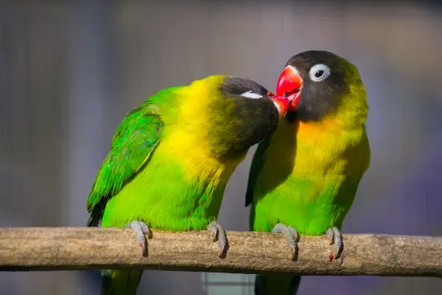

Los agaporni son animales sociables y disfrutan de la compañía de otros agapornis y de sus dueños. Estos pájaros son conocidos por formar vínculos estrechos con sus parejas y con otros agapornis, lo que les ayuda a sentirse seguros y cómodos en su entorno. En el caso de que un miembro de la pareja muera, es importante reemplazarlo lo antes posible. También podemos crear un grupo más numeroso, pero siempre intentando que sean parejas. No te preocupes si no quieres tener muchos, ya que solamente se reproducen si se les proporciona una caja nido.
En el mercado es posible encontrar una gran variedad de productos para agapornis, pero lo cierto es que hay algunos mejores que otros. Nosotros siempre recomendamos una mezcla de granos variada con poca grasa y complementada con minerales y vitaminas. Esta mezcla de semillas debe aportarle alrededor del 50% de la totalidad de la dieta. Pero también puedes añadir una cucharada diaria de pienso para agapornis de buena calidad, ya que se trata de una opción muy cómoda y equilibrada. Además, de vez en cuando debes darle restos de frutas y hortalizas. Y es que este tipo de plantas, además de proporcionarles nutrientes los mantienen entretenidos. En cualquier caso, es importante que siempre lo hagas con moderación.
Al igual que cualquier otro pájaro, los agapornis necesitan agua para vivir, por lo que debes proporcionársela a diaria y revisar que siempre tienen, sobre todo, en verano donde deben bañarse con regularidad para mantenerse frescos y con un plumaje limpio y saludable. También se debe limpiar la jaula con frecuencia para evitar la acumulación de bacterias y hongos. Es importante que el agua esté siempre limpia.
Aunque estén metidos en una jaula, los agapornis son pájaros que vuelan regularmente en la naturaleza, por lo que necesitan un poco de libertad para mantenerse saludables y en forma. Eso sí, recuerda que no deben estar expuestos a ningún posible peligro, por lo que es importante retirar cualquier tipo de planta que pueda ser venenosa para ellos y objetos que puedan poner en riesgo su seguridad. Lo ideal es abrirles la jaula una vez al día, siempre con las ventanas de casa cerradas para que no puedan salir y perderse. De esta forma, podrán estirar las patas, revolotear y curiosear. Si tienes tiempo, juega un poco con él y dale premios. Además, debes saber que la música les encanta y les anima, haciendo que les entren ganas de cantar.
La luz es un elemento fundamental para las aves. Esta luz debe ser directa sin que pase por un cristal que filtro los rayos UV. Por eso, lo ideal es colocarlos cerca de una ventana y abrirla con frecuencia. Durante el invierno, utiliza una lámpara de luz para que no pasen frío con la ventana abierta.
Aunque son pájaros, los agapornis también necesitan un poco de cariño para llevarse bien con su cuidador. Si les ofreces cariño, tranquilidad y comodidad, y les hablas con afectividad, no tendrás ningún problema. Aunque siempre se recomienda tener al menos dos agapornis para que puedan interactuar y socializar entre sí. De esta manera, pueden jugar juntos, comunicarse mediante diferentes sonidos y comportamientos y mantenerse activos y estimulados. Además, los agapornis disfrutan de la atención y el contacto humano, aunque es importante no sobrecargarlos con demasiadas caricias y dejarles su espacio para que puedan moverse libremente y explorar su entorno.
Los agapornis son aves muy inteligentes y requieren de estímulos constantemente, por lo que lo pasan muy mal cuando están aburridos. Muchas jaulas ya traen consigo juguetes colgantes y escaleras, pero si no es así, puedes comprárselos para que se entretenga. También puedes colocar algunas ramitas para que se posen, salten de unas a otras y desgasten las uñas y el pico.